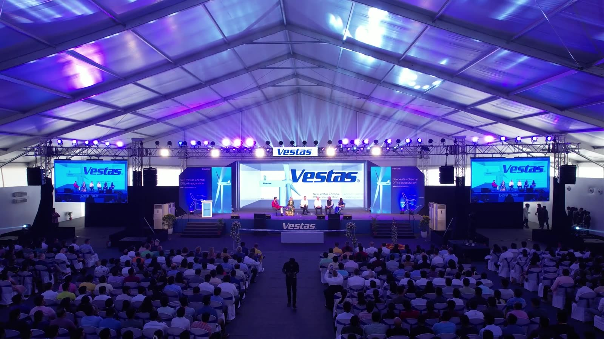

One factory, every shift, one townhall.
After Vestas took over the TPI Composites blade factory, we ran the first townhall on the factory floor for every shift, with an anamorphic LED film curated in-house.
Read the story →We're not an event company. We're the team-building people who now run your corporate events too, from office inaugurations to annual days, so every event is built around your people, not the stage.
Joy Stories has been Vestas' engagement and events partner in Chennai for five years, and our founder has worked alongside Vestas teams for more than a decade. Factory townhalls, office openings, anniversaries and annual days: the occasions change, the people stay at the centre.
For the inauguration of Vestas' new Chennai office, we brought the whole Vestas family together for a day that felt as big as the moment: a welcome walk, leadership on a full-scale stage, and folk, dance and drum performances that filled the room.
After Vestas took over the TPI Composites blade factory, we ran the first townhall on the factory floor for every shift, with an anamorphic LED film curated in-house.
Read the story →A full day for VTCC's 15th year in India: a folk welcome, a giant human V on the lawn, and an evening of performances that ended in one huge drum circle.
Read the story →The Engineering Business Service Centre's annual day, in neon: games on the lawn by day, then a glowing stage, team performances and a packed dance floor by night.
Read the story →For the Tamil Nadu Cashew Processors and Exporters Association, we lit up the night sky over Panruti on National Cashew Day, and set a world record for the largest display of a cashew fruit using drone lights.
Strategy, bonding and fun, in one well-paced plan. Team outings →
A full-scale celebration of the year gone by. Performances, awards and everyone in one room.
Bring families into the workplace story, and build loyalty beyond the office.
Meetings, incentives, conferences and exhibitions, planned end to end with engagement-first thinking.
Diwali nights, Christmas parties, New Year bashes. Office celebrations →
Channel your team's energy into causes that matter, for impact beyond the workplace.

Every event has a team-building heartbeat: people talking, playing and connecting, not just watching.
No. We're the team-building people who also run corporate events. That's why every event we plan is built around your people, not the stage.
Office inaugurations, townhalls, annual days, company anniversaries, family days, offsites, MICE, festive celebrations and CSR events. See our Vestas stories for examples.
Yes. We plan corporate team outings near Chennai and offsites, with a team-building programme that makes the day count.
Tell us about your team, your calendar and your next big moment. We'll come back within one working day.